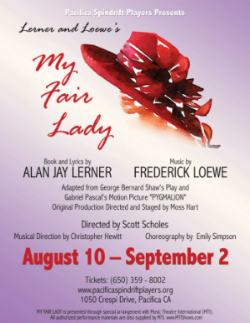
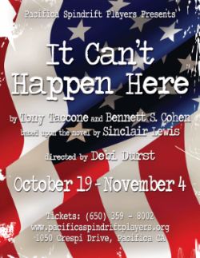
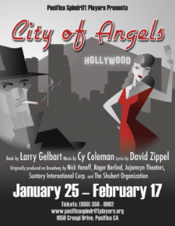

The Pacifica Spindrift Players, lovingly called PSP, is a non-profit organization committed to providing quality live community theatre to Pacifica and the Bay Area.
Upcoming Shows



About Us
Pacifica Spindrift Players Values:
- Non-Profit: PSP is a not for profit organization, and we are volunteer driven. Dedicated volunteers work in all areas of the theater, from front of house to performers to our Board of Directors. Please contact us if you’re interested in volunteering!
- Fostering Community: We love to give back to our community! PSP reaches out to our community by participating in Fog Fest, loaning and donating equipment to high school productions, and offering special benefits and talent showcases for deserving causes.
- Education: PSP believes that anyone interested can learn the art of theatre. We encourage new people to join us and learn – both onstage and behind-the-scenes.